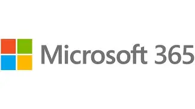
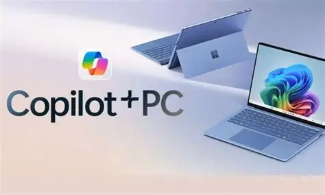
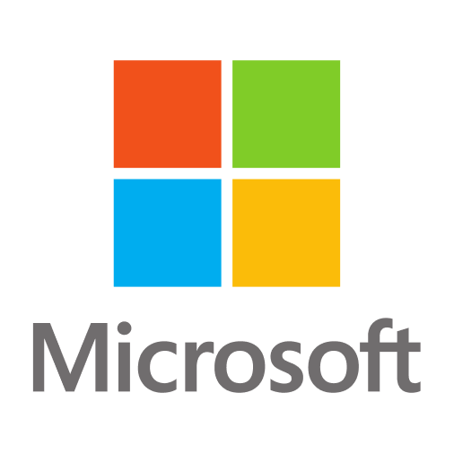

História da microsoft
A Microsoft foi fundada em 4 de abril de 1975, nos Estados Unidos, por Bill Gates e Paul Allen. Os dois eram amigos e apaixonados por computadores. O primeiro grande projeto da empresa foi uma versão da linguagem de programação BASIC para o computador Altair 8800. Um momento decisivo aconteceu em 1980, quando a IBM procurou a Microsoft para fornecer um sistema operacional para seu novo computador pessoal. A Microsoft passou a fornecer o MS-DOS, lançado com o IBM PC em 1981. O crescimento dos computadores compatíveis com o IBM PC ajudou a transformar a Microsoft em uma das principais empresas de software do mundo.
A primeira versão
O primeiro produto da empresa foi uma versão da linguagem de programação,desenvolvida para o computador criado. Esse foi o início da Microsoft, que anos depois criou o Windows e se tornou uma das maiores empresas de tecnologia do mundo.

A primeira criação da Microsoft foi uma versão da linguagem BASIC, desenvolvida para o computador Altair 8800. Esse pequeno projeto marcou o começo da empresa, que anos depois se tornaria uma das maiores gigantes da tecnologia.
Surge uma nova ideia
Microsoft começou a ganhar forma quando Bill Gates e Paul Allen decidiram transformar sua paixão por computadores em um negócio. Em 1975, os dois desenvolveram uma versão da linguagem BASIC para o Altair 8800, dando início à empresa que anos depois se tornaria uma das maiores do mundo na área de tecnologia.
A ideia da Microsoft era criar softwares que tornassem os computadores mais acessíveis e fáceis de usar. Com o passar dos anos, a empresa desenvolveu produtos cada vez mais populares, até chegar ao Windows, seu sistema operacional que ajudou a transformar os computadores pessoais em algo comum nas casas e empresas.

Uma das grandes inspirações para a identidade visual da Microsoft veio da ideia de representar a tecnologia de maneira simples e fácil de reconhecer. Ao longo dos anos, o famoso logotipo da empresa passou por mudanças, mas manteve uma característica marcante: o símbolo formado por quatro quadrados coloridos, associado aos principais produtos da Microsoft e à diversidade de suas áreas de atuação.

Quer aprender mais?
Outro assunto curioso sobre a Microsoft é que seus produtos e versões também ganharam nomes que ficaram marcados na história da tecnologia. O Windows, por exemplo, teve versões com nomes bastante conhecidos ao longo dos anos:
- Windows 1.0
- Windows 3.1
- Windows 95
- Windows 98
- Windows XP
- Windows Vista
- Windows 7
- Windows 8
- Windows 10
- Windows 11
Curiosamente, a Microsoft também deixou de lado uma antiga tradição de nomes nas versões do Windows. Depois de versões como Windows 95, 98, XP e Vista, a empresa passou a adotar principalmente números, chegando ao Windows 10 e, posteriormente, ao Windows 11.
Acesse o site oficial da Microsoft para conhecer mais sobre a história da empresa, suas principais versões do Windows e as tecnologias que ajudaram a transformar o mundo da informática.
Esperamos que tenham gostado do nosso site e que tenham aprendido um pouco mais sobre a história da Microsoft e suas principais tecnologias. Obrigado pela visita e até a próxima!